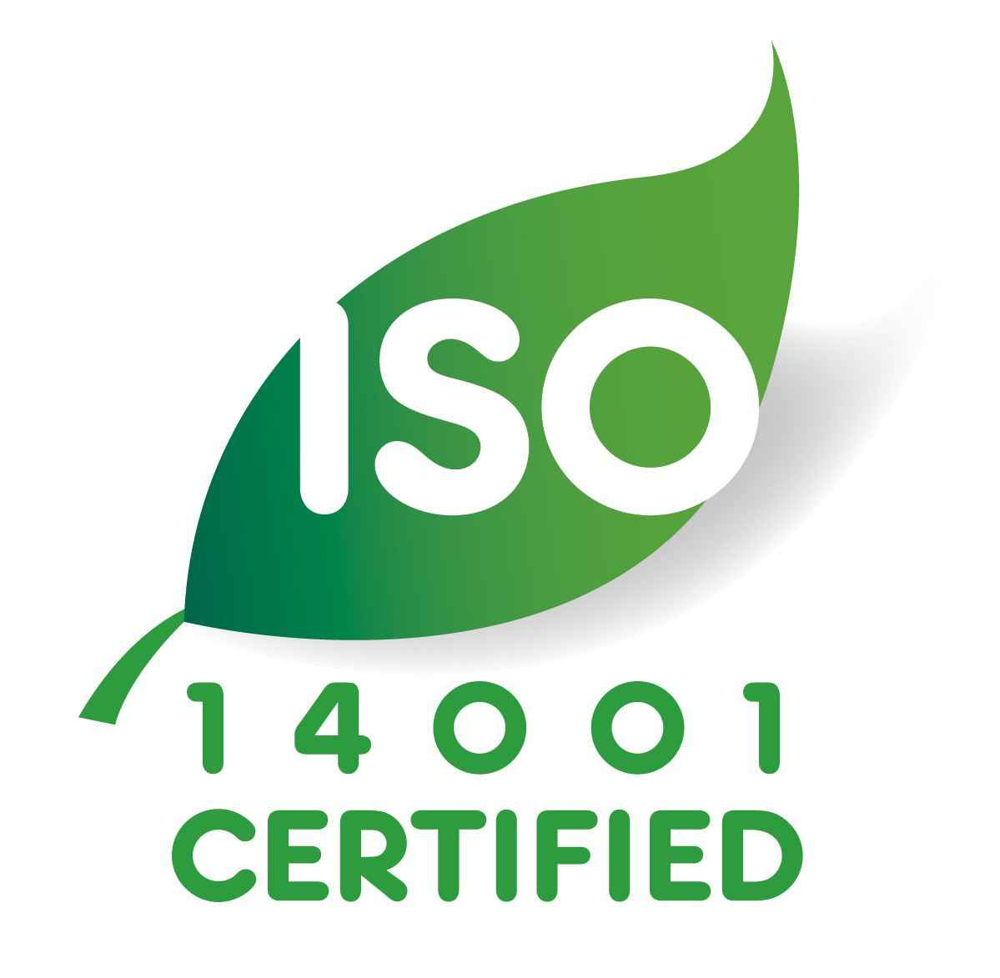
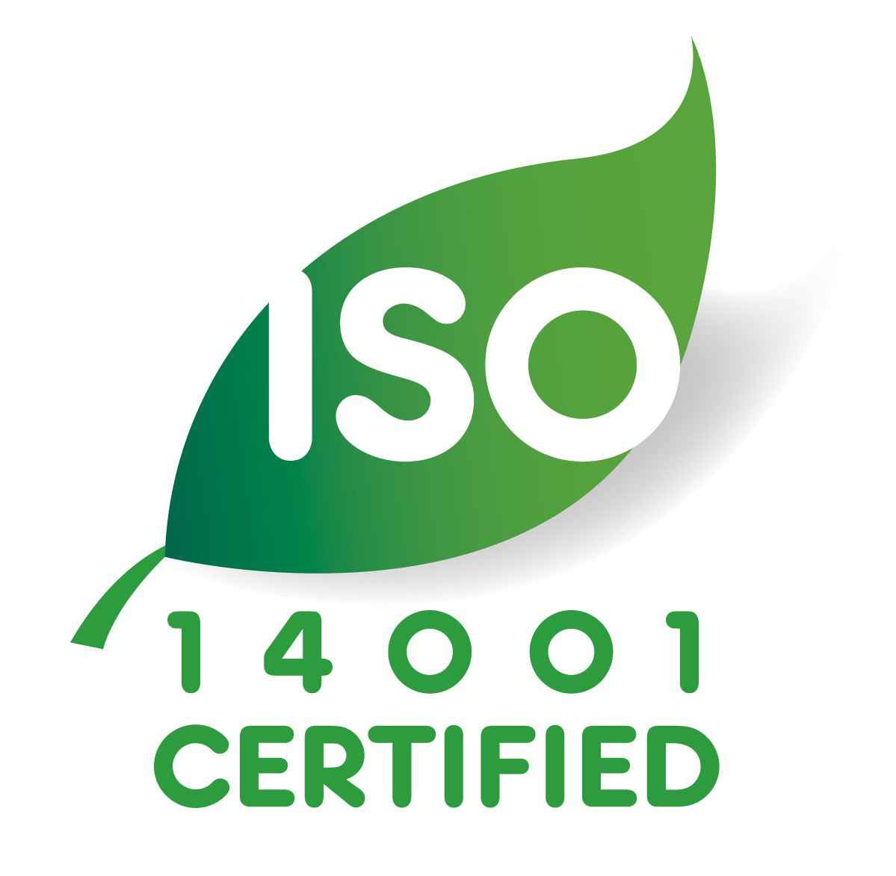

A Simple Way conjugue les savoir-faire et les expertises d’un leader marocain de la propreté et du multi-services.
Quel que soit l’environnement : bureaux, industries, centres commerciaux, grandes surfaces, espaces publics tels que gares et aéroports, hôtels, établissements de santé, ASW propose une gamme complète de services de nettoyage professionnel adaptés aux besoins et exigences de chaque client. A Simple Way propose également une gamme de services complémentaires à destination des occupants.
Découvrez ci-dessous notre offre, nos engagements, nos références par secteur d’activité et les raisons de nous choisir.

Solution innovante de protection de surface, attirant et détruisant les agents pathogènes en seulement 15 minutes, Activ’Protect est efficace contre la COVID-19 (et ses variants) ! Et ce, pendant 30 jours grâce à son action rémanente.


Des équipes de spécialistes par secteur permettant d’apporter l’expertise nécessaire et une réelle valeur ajoutée aux clients :
Nos innovations sont conçues pour améliorer les conditions de travail de nos collaborateurs, la qualité et l’efficacité de nos services et un meilleur respect de l’environnement :
Vous trouverez ci-dessous quelques exemples d’innovations déployées actuellement :


 
